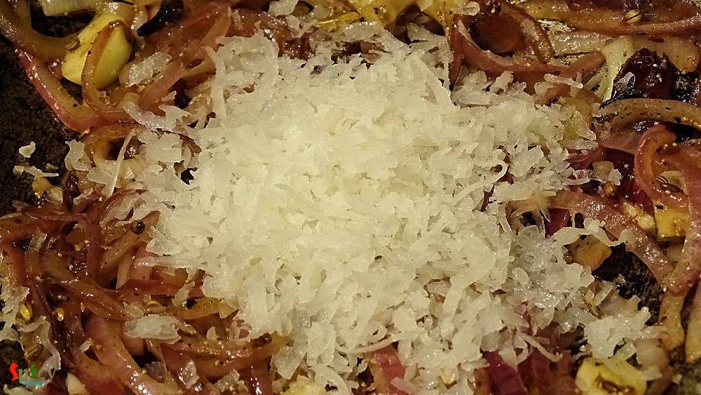
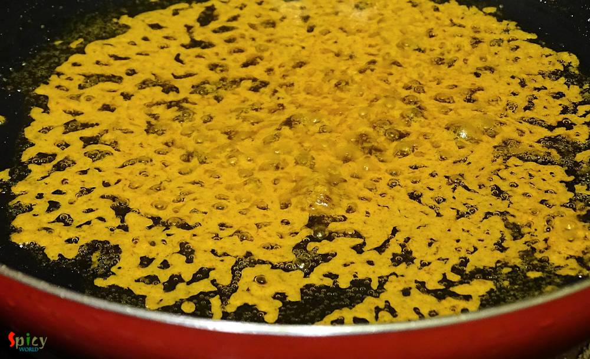

Simple and Easy Recipes
Kolhapuri Murgh Masala / Kolhapuri Chicken Curry
© 2016 Spicy World, Published on: Jun 13, 2016
Earlier I have shared the recipe of 'Kolhapuri Egg curry', today I am going to share the same recipe, but with chicken and some changes. One of the main ingredient in Maharashtrian cuisine is 'coconut'. We both are not too much coconut eater but when it comes to make authentic dish, I always try to make the taste as close as possible. As this is a 'Kolhapuri' gravy, you have to incorporate coconut. I didn't have fresh one that's why I used dried one. We both found the taste and flavour of the dish extremely delicious. The spicy gravy with sweet coconut flavour and juicy chicken pieces will take you to another world. Try this easy recipe in your kitchen and enjoy a lovely dinner with your family.

Ingredients
- Whole spices (2 green cardamom, 3 cloves, 6 black peppercorns, 2 Tablespoons of poppy seeds, 1 small cinnamon stick, 2 dry red chilies, 1 Tablespoon of coriander seeds, 1 Tablespoon of cumin seeds).
- 2 Tablespoons of curd.
- 1 onion, thinly sliced.
- 1 Tablespoon of chopped garlic.
- Half Tablespoon of chopped ginger.
- 1 and half Teaspoon of turmeric powder.
- 1 Teaspoon of hot red chilli powder.
- Salt and sugar.
- 3 Tablespoons of dried / fresh grated coconut.
- 4 Tablespoons of oil.
- Warm water.
- Half kg chicken with bone pieces.


Steps
Heat 1 Tablespoon of oil.
Add all the whole spices in hot oil. Saute for a minute.
Now add sliced onion, chopped ginger and garlic with pinch of salt. Mix and cook for 5 minutes.
Then add the grated coconut and mix well for another 3 minutes.
Turn off the heat and transfer this mixture into a blender. Make a smooth paste out of it and keep aside.
Heat the remaining oil in a pan.
Add the washed chicken pieces. Fry them for 4 - 5 minutes in medium flame. Give them light golden color.
Then remove them from the pan.
Mix turmeric powder, red chilli powder, 1 Teaspoon of salt and pinch of sugar with the curd.
In the same oil add this curd mixture.
Cook for 5 minutes in low flame and then add 4 Tablespoons of that masala paste.
Mix and cook in medium flame for 6 minutes.
Add half cup of warm water and again cook for 4 minutes.

Lastly add those fried chicken pieces with some salt into the gravy and cook for 25 minutes in low flame.
Then turn off the heat, let it rest for 2 minutes, then serve.
Your Kolhapuri chicken curry is ready ...
Serve them hot with steamed rice or butter naan ...
")